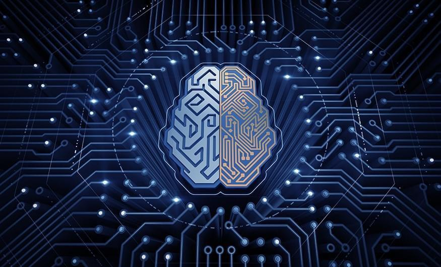

Artifical intelligence main page
links:

Artificial intelligence (AI) is intelligence demonstrated by machines, unlike the natural intelligence displayed by humans and animals, which involves consciousness and emotionality. The distinction between the former and the latter categories is often revealed by the acronym chosen. 'Strong' AI is usually labelled as artificial general intelligence (AGI) while attempts to emulate 'natural' intelligence have been called artificial biological intelligence (ABI). Leading AI textbooks define the field as the study of "intelligent agents": any device that perceives its environment and takes actions that maximize its chance of achieving its goals.[3] Colloquially, the term "artificial intelligence" is often used to describe machines that mimic "cognitive" functions that humans associate with the human mind, such as "learning" and "problem solving".
As machines become increasingly capable, tasks considered to require "intelligence" are often removed from the definition of AI, a phenomenon known as the AI effect. A quip in Tesler's Theorem says "AI is whatever hasn't been done yet." For instance, optical character recognition is frequently excluded from things considered to be AI, having become a routine technology. Modern machine capabilities generally classified as AI include successfully understanding human speech,[9] competing at the highest level in strategic game systems (such as chess and Go),[10] and also imperfect-information games like poker,[11] self-driving cars, intelligent routing in content delivery networks, and military simulations
Computer science defines AI research as the study of "intelligent agents": any device that perceives its environment and takes actions that maximize its chance of successfully achieving its goals.A more elaborate definition characterizes AI as "a system's ability to correctly interpret external data, to learn from such data, and to use those learnings to achieve specific goals and tasks through flexible adaptation.